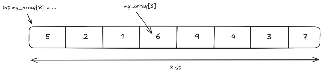

Wikin
Välkommen till våran C++ Wiki!
Varför har vi skrivit Wikin
Wikin är skriven som en guide till allt i C++. Vi som skrivit den har gjort det för att dokumentera de relevanta delarna av språkets och kursens innehåll. Det ger oss möjlighet att gå tillbaka och repetera innehållet men även för andra att kunna ta del av och lära sig.
Instruktion på hur man använder Wikin
Wikin är strukturerad som en bok och kapitel kommer så gott som möjligt att endast bygga på tidigare kapitel. Målet är att ha en bok som går att följa för att lära sig C++ utan att missa vitala delar och fallgropar.
För att läsa wikin utan tidigare kunskaper om språket så rekommenderas det att börja från början (nästa sida) och läsa kapitel för kapitel som alla innehåller information såsom koncept, exempel och andra språkspecifika saker.
Kapitel kommer även i största mån att innehålla länkar till tidigare kapitel om du glömmer bort eller hoppar över koncept som har nämnts tidigare. Detta kommer även att vara faktumet för koncepten och annat som ännu inte har blivit genomgångna. Vi kommer vara tydliga med att dessa är ett hopp framåt i boken, då vi vill undvika dessa typer av hopp i allra största mån.
Tips på att använda Wikin
- Wikin har många små detaljer som kan vara viktiga för att förstå helheten. Därför är det bra att läsa hela texten istället för små sektioner.
Rapport av misstag och förslag på förbättringar
Det kan alltid uppstå fel, misstag, slarv och annat roligt. Därför är vi oerhört tacksamma för de som väljer att skapa issues på bokens innehåll, exempel och mer.
Vi är tacksamma om man skapar en Issue som innefattar problemet eller förslag som man har till wikin. Genom att ha en Issue skapar det möjlighet för oss att ha en diskussion relaterat till det förslaget eller problemet.
Om man känner sig extra hjälpsam eller driven gällande ett problem med wikin kan man skapa en PR med ett förslag på ändring. För att skapa en PR så kan man följa denna guide: Creating a pull request - Github docs. När man skapat sin PR så kan man länka sin Issue till sin PR så blir det enklare för oss alla.
Memory
När en applikation startar får den en bit arbetsminne (RAM) som applikationen kan använda för att utföra sina uppgifter. Vad applikationen ser är egentligen bara en lång sekvens av ettor och nollor. Det är hur dessa ettor och nollor tolkas som gör att den kan spara och läsa information från arbetsminnet.
Vi delar upp sekvensen av ettor och nollor i andelar, dessa kallas bits och bytes. Bit är namnet på en av dessa ettor/nollor och kan endast vara noll eller ett. Genom att kombinera flera bit kan vi få värden som är större än ett. Vi använder det binära talsystemet för att uppnå detta. Byte är en konvention som representerar åtta bits. Det är specifikt åtta bits eftersom ascii behövde storleken för att representera en karaktär i en sekvens av tecken. Det bara råkade vara så att det blev populärt.
När vi placerar flera nummer i minnet definierar vi storleken och läser från början till slut. Till exempel om vi har fyra nummer som är fyra bits stora skulle vi kunna ha följande:
0001001000111000
Vilket ger talen:
0001|0010|0011|1000
0001 = 1
0010 = 2
0011 = 3
1000 = 15
Men som sagt så vet vi inte att det är fyra nummer utan att även veta storleken på de olika talen. Det skulle även kunna läsas som:
0001|00100011|1000
eller
0001|0010|00111000
Allt beror på hur vi väljer att definiera det i vårt program.
Static types och variabler
Variabler är bas för programmering, att kunna hålla information, mutera (ändra)_ _informationen och sedan se vilken information som variabeln håller. Det finns två vitala sätt som variabler i C++ skiljer sig från andra språk som Python: Static types och lagring.
Static types betyder att vi explicit definierar vad som kommer att ligga i en variabel. Det betyder att vi måste explicit säga att variabeln my_text kommer innehålla en string. Det finns huvudsakligen två anledningar till detta: För att veta vilka handlingar som vi kan utföra på en typ. För att veta storleken på det som ska ligga i minnet, vilket för oss in på lagring.
Lagring i detta fall betyder vilken storlek och position i minnet som en variabel tar upp. Eftersom C++ är ett systemspråk betyder det att det måste interagera direkt med minnet. Allt C++ vet är det som du berättar om hur memory ser ut, inget mer. Det gör att Static types definierar ordningen och storleken på bitar i minnet.
Branching
Branching är att du med olika indata kan exekvera olika bitar av kod. Förändring på indata förändrar exekveringen av ditt program. Det enklaste exemplet att visa praktiskt på Branching är if.
Condition
Condition kan vara två saker: _expression _eller _simple declaration _(läs varningen). Expression är saker som evalueras till något, och även assignments som evalueras till det satta värdet.
Condition ger ett värde som bestämmer vilken branch som programmet exekverar. På grund av att condition kan innehålla så många olika saker så kan detta se ut på olika sätt. Vi kan ta några exempel:
Warning: Simple declaration är en initialisering av en ny variabel (eller annan identifier). Vilket är möjligt att göra i en Condition men är oftast väldigt dumt. Det finns anledningar till att detta är möjligt, men ni behöver inte oroa er om detta. Läs mer på cppreference.
==betyder “lika med”!=betyder “inte lika med”<betyder “mindre än”>betyder “större än”<=betyder “mindre eller lika med”>=betyder “större eller lika med”&&betyder “båda måste vara true för att evaluera true”||betyder “någon måste vara true för att evaluera true”
Det går att hitta fler symboler under expressions.
4 == 4; // true
4 != 4; // false
4 == 3 || 2 == 2; // true eftersom “||” betyder “or”
// false or true vilket är true
4 == 4 && 2 != 2; // false eftersom “&&” betyder “and”
// false and true vilket är true
If
Som sagt ovan så är if ett enkelt sätt att ha en branch i ett program. I C++ så har vi tre huvudsaker som man behöver hålla reda på när man använder if. if exekverar en annan bit kod utifrån en condition. else kan följa if-blocket för att exekvera en bit kod ifall villkoret inte uppfylls. Condition är en bit kod som evalueras till ett värde som bestämmer vilken branch som programmet ska gå till.
If utan else
int main() {
if (true) {
// my code that will always execute
}
if (false) {
// my code that will never execute
}
}
If med else
int main() {
if (false) {
// my code that will never execute
} else {
// my code that will always execute
}
if (false) {
// my code that will never execute
} else if (true) {
// my code that will always execute
} else {
// my code that will never execute
}
}
Switch
switch är till för att matcha ints eller Enums mot flera andra ints eller enums och exekvera kod utifrån det; läs mer på cppreference. switch är fundamentalt olikt till if även om det representerar en lösning till samma problem. Exempelvis kan det se ut såhär:
switch (my_variable) {
case 1:
std::cout << 1 << std::endl;
case 2:
std::cout << 2 << std::endl;
break;
default:
std::cout << “default” << std::endl;
}
switch matchar variabeln tills att den hittar en match annars använder den default. När _control _ser en match för my_variabel så kommer den att börja exekvera därifrån och fortsätta genom nästa case tills att den träffar break;.
Om vi ansätter 1 i variabeln my_variable hade vi sett output:en
1
2
Vi ser här att vi exekverar både fallet när my_variable är lika med 1 men efteråt även 2. Vi ser dock inte fallet default bli exekverat. Det är på grund av break, som avbryter exekveringen i fallet 2.
Om vi istället ansätter 2 i variabeln my_variable hade vi sett output:en
2
Här ser vi endast att fallet där my_variable är lika med 2 exekvera.
Om vi ansätter någonting annat, t.ex. 3 i variabeln my_variable hade vi sett output:en
default
default är till för att matcha allt, oavsett vad som stoppas in i switch. Lägg märke till att annat blir matchat istället för default. Det är bra att alltid lägga default sist så att man kan läsa igenom alla fall och sedan se vad som sker i resten.
Scope
Scope är den fundamentala delen där dina variabler existerar. Ett scope definierar var vi kan använda variabler. När scopet har tagit slut så kommer minnet att “tas tillbaka”. Bara för att en variabel existerar betyder det inte att den lever/ är korrekt.
Lifetimes
Vi kallar tiden variablen lever för en lifetime. Att leva och vara i scope är inte samma sak då lifetimen av en variable tar slut när den frigörs(free) när den förstörs/[[destrueras|Destructors]].
int A=1; // ----------------+-- 'a
int main() { // |
int b; // ---------+-- 'b |
{ // | |
int c = 5; // -+-- 'c | |
//more code // | | |
} // -+ | |
// | |
} // ---------+ |
// |
När minnet har tagits tillbaka har lifetimen tagit slut. Lifetimes definierar när vi har åtkomst till variabler och hur länge de existerar. I ovan exempel har vi 3 variabler som har lifetimes inom 3 olika scopes. A finns åtkomligt i hela exemplet. b finns åtkomligt i hela [[funktionens|Functions]] scope. c finns endast i det lilla inre scopet.
Global Scope
Gällande global scope så finns det två koncept som arbetar samtidigt: Compilerns läsning av filer och exekvering av koden. Dessa två koncept definierar funktionalitet gällande global scope. Grundläggande är allt som är definierat i global scope, tillgänglig i hela programmet. Det finns ett motstridande koncept som är att C++ blir exekverat rad för rad. Den huvudsakliga filen, där main [[funktionen|Functions]] är definierad, i programmet är den filen som kontrollerar i vilken ordning saker kommer att bli definierade. Om saker inte finns definierade innan de är kallade i huvudfilen, anses de inte vara i global scope. Om saker är definierade, enligt i huvud-programmets exekvering, finns de i global scope. Förutsatt att de är definierade utanför något annat scope, såsom main-funktionen.
int C = 2; // -------------+- 'c
// |
int main() { // |
// C finns tillgängligt // |
// A finns inte tillgängligt // |
} // |
// |
int A = 3; // --------+-'a |
// | |
// | |
När en variabel blir definierad i global scope är standarden att skriva variabel namnet i SCREAMING_SNAKE_CASE.
int MY_GLOBAL_VARIABLE = 0;
Namespaces
Namespaces är till för att dela upp global scope. Eftersom vi refererar till saker via namn så finns det en risk att vi definierar saker flera gånger. Namespace är liksom en prefix för att lägga ytterligare distinktion till vad för något blir refererat. Samma namn riskerar att referera till flera olika saker.
Man kan likna namespaces till ett virtuellt scope som inte påverkar lifetimes men som tydliggör referenser till definitionerna.
Creation
För att skapa ett nytt namespace har vi liknande syntax som att definiera ett nytt scope.
namespace X {
int Y = 0; // Y finns nu inuti namespace X
}
int Z = 1; // Z är utanför namespace X
Accessing
För att komma åt en variabel eller annat som finns inuti ett namespace refererar vi till namnet på vårt namespace och namnet på vår identifier (variabel namnet t.ex.).
namespace X {
// Y finns nu inuti namespace X och i global scope
int Y = 0; // ----+- 'y
} // |
int main() { // |
std::cout << X::Y << std::endl; // |
} // |
Global scope access
Som standard har vi syntax för att gå in i namespaces, men i vissa fall vill vi gå ut ur namespaces för att referera någonting. Specifikt är detta användbart med name conflict med en variabel i global scope och nuvarande namespace.
int X = 0;
namespace Y {
int X = 2;
…
X // 2
::X // 0
…
}
Vi använder syntaxen för att komma åt ett namespace, utan något namn, för att referera till global scope. Det är liksom en negation mot vår namespace nesting.
Pointers
Fundamentalt är en pointer ett nummer som representerar en plats i minnet. Det finns funktionalitet för att kolla på värdet som ligger på minnesplatsen bakom pointern; platsen i minnet som värden på pointern refererar till.
Vi tar en pointer för att referera till en plats istället för att flytta runt värden. Istället för att flytta huset så ser du till att komma ihåg husets adress. Men du kan inte besöka huset genom att endast ha adressen till det. Du måste fysiskt ta dig till platsen där huset ligger för att kunna besöka det. Att fysiskt besöka huset skulle då representera dereference för en pointer.
Om du sen vill visa din kompis huset kan du bara ge vidare adressen och skapa möjligheten för din kompis att gå till huset också. På samma sätt kan du ha flera pointer till samma plats.
Referance och dereferance
Två av termerna som kommer i användningen av pointers är “reference” och “dereference”. Reference betyder att du håller ett värde och tar en pointer till det värdet. Dereference är motsatsen, att du har en pointer och får ett värde.
Syntax
Det finns två sätt att se pointer syntax, “types” och “values”. I types beskriver syntaxen “när operationen har skett, får vi underliggande typen …”. I _values _så beskriver syntaxen det faktiska operationen som sker. Det kan göra det svårt att tolka pointer-syntax.
Gällande värden:
*betyder “ dereference ”&betyder “ reference ”
value = *pointer; // Dereferencar pointer
pointer = &value; // Referencar value
Gällande typer där T är en type i C++:
*betyder “underliggande värdet till pointern har typen T när den är dereferenced ”
int* pointer = &12; // Håller en pointer till ett värde av typen `int`
Det finns ytterligare syntax som används i andra områden som [[funktioner|Functions]] och [[klasser|Classes]]. Det är inte nödvändigt för att förstå __pointers __utan endast bygger på existerande funktionalitet.
Example
Pointers kommer oftast att vara annorlunda varje gång som programmet exekveras. Vi behöver inte veta varför detta sker just nu det är för säkerhet.
int main() {
int variable = 12;
int* pointer_to_my_variable = &variable;
std::cout << pointer_to_my_variable << std::endl;
// output (något i stil med):
// 0x7fffc9d3f9a4
int dereferenced_pointer_to_my_variable = *pointer_to_my_variable;
std::cout << dereferenced_pointer_to_my_variable << std::endl;
// output:
// 12
}
Större data och pointers
Vi utgår ifrån ett program som läser in en stor fil. Om vi går in i ett nytt scope eller område av koden så skapas nya variabler för att representera datan som scopet har åtkomst till. Vi vet att filen är stor, så vi vill undvika att kopiera den till en ny variabel. Ett nummer är mycket mindre än att kopiera en hel fil, av den anledningen är pointern mycket bättre. Pointern, som då blir kopierad, pekar mot fildatan. Det ger oss möjlighet att läsa utan att kopiera. En annan positiv effekt är mutability. När vi ändrar kopierad data kommer det inte att representeras i det yttre scopet. Genom pointer har vi tillgång till samma data/plats som det yttre scopet; även tillgång att ändra på datan för det yttre scopet.
Scoped pointers
En pointer är en variabel och detta betyder att de har en lifetime och bara kan användas i scopet som variabeln finns i. När pointers går out of scope är det bara själva numret som ges tillbaka till datorn och inte nödvändigtvis
Array
En array är, liksom variabler, ett sätt att hålla information, mutera(ändra) information och hämta information. Skillnaden mellan arrays och variabler är att arrays håller flera element (tänk dig variabler) som ligger efter varandra i minnet.
En array är egentligen en pointer till första elementet samt antalet element. Dessutom behöver vi en typ av element för att få reda på storleken för varje element.
En array kan inte bli större på grund av det faktum att det bara är ett sammanhängande bit minne. Vi riskerar att skriva över annan data i vårt program om vi försöker göra den större. Därför behöver vi säga till C++ hur många element vi vill ha i programmet samt vilken typ som elementen har. Olika typer har olika storlekar.
int my_array[3] = {5, 2, 1}; // initialiserar [5, 2, 1]
För att få tag i ett element “indexerar” vi in i vår array. Vi läser en plats i arrayen utifrån dess position. För att utföra detta gör vi något som kallas “ pointer arithmetic ”, även kallat “matte med pointers”. I vanliga fall är pointer arithmetic farligt på grund av att du kan råka gå utanför det minne som du hade tänkt. Detta är även fallet här så man måste vara noga med att hålla sig till antalet element man angett.
Vi börjar på platsen för första elementet och sedan adderar antalet element multiplicerat med storleken på våra element. Om vi skulle räkna ut vilken pointer vi behöver ha för att nå element 2, , av en int my_array[3] där är vår pointer:
Note: Det är av den anledningen som första elementet har index 0.
C++ har en syntax för att göra detta automatiskt, så man behöver inte tänka i dessa banor medan man programmerar. Det är bara bra att veta vad som faktiskt händer. Syntaxen som vi har är [x] där x är vår index.
